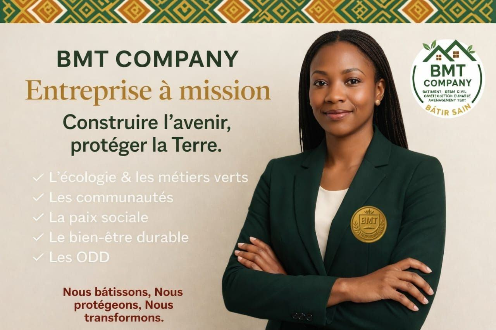
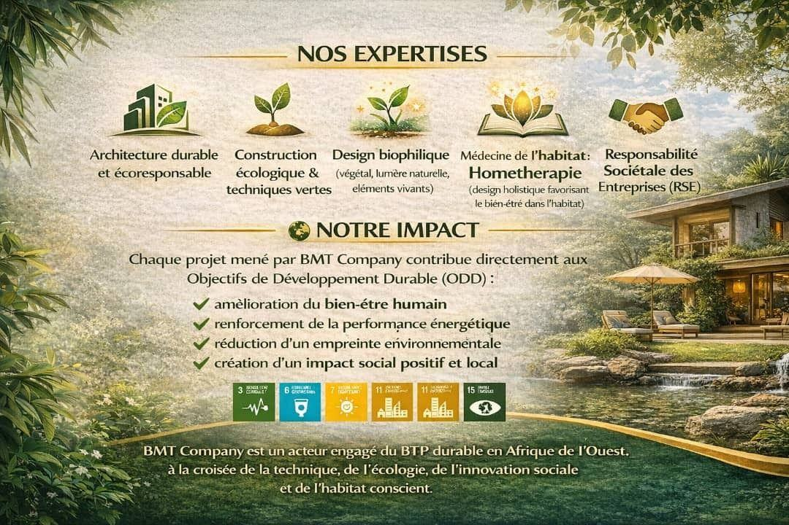
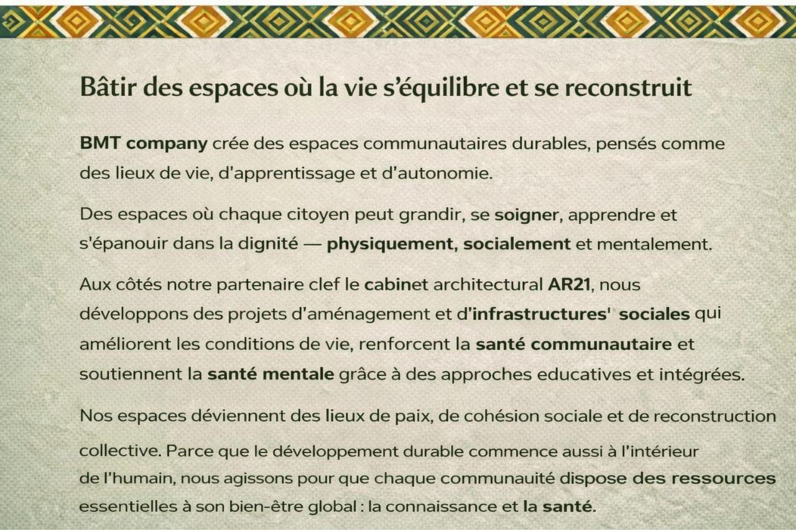
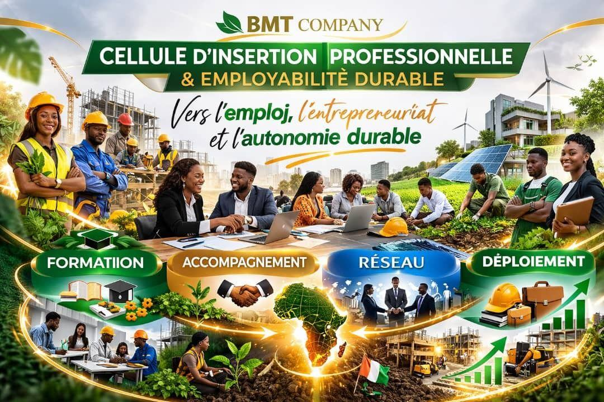

BMT Company — Bâtir sain
Bâtiment, génie civil, construction durable et aménagement vert. Construire l'avenir, protéger la Terre.
Une entreprise ivoirienne à mission
BMT Company est une entreprise ivoirienne à mission spécialisée en BTP durable, construction écologique, aménagement vert et design holistique.
Basée en Côte d'Ivoire, elle accompagne les particuliers, les entreprises, les collectivités et les institutions dans la conception, la construction et la rénovation d'espaces de vie sains, durables et responsables.
Notre objectif est simple : bâtir aujourd'hui des espaces qui respectent l'humain, la nature et les générations futures.

Du bâtiment durable à la médecine de l'habitat
Architecture durable et écoresponsable
Des bâtiments pensés pour durer, économes et respectueux de leur environnement.
Construction écologique & techniques vertes
Matériaux sains, chantiers responsables et performance énergétique.
Design biophilique
Végétal, lumière naturelle et éléments vivants au cœur des espaces.
Médecine de l'habitat : Home Thérapie
Design holistique favorisant le bien-être dans l'habitat.
Responsabilité Sociétale des Entreprises (RSE)
Des projets alignés sur les Objectifs de Développement Durable.
Nos engagements
L'écologie et les métiers verts, les communautés, la paix sociale, le bien-être durable et les ODD. Nous bâtissons, nous protégeons, nous transformons.
Chaque projet contribue aux ODD
Chaque projet mené par BMT Company contribue directement aux Objectifs de Développement Durable :
- amélioration du bien-être humain ;
- renforcement de la performance énergétique ;
- réduction de l'empreinte environnementale ;
- création d'un impact social positif et local.
BMT Company est un acteur engagé du BTP durable en Afrique de l'Ouest, à la croisée de la technique, de l'écologie, de l'innovation sociale et de l'habitat conscient.
BMT Company crée des espaces communautaires durables, pensés comme des lieux de vie, d'apprentissage et d'autonomie : des espaces où chaque citoyen peut grandir, se soigner, apprendre et s'épanouir dans la dignité — physiquement, socialement et mentalement.
Aux côtés de son partenaire clé, le cabinet d'architecture AR21 (Architectes 21), elle développe des projets d'aménagement et d'infrastructures sociales qui améliorent les conditions de vie, renforcent la santé communautaire et soutiennent la santé mentale grâce à des approches éducatives et intégrées.
Parce que le développement durable commence aussi à l'intérieur de l'humain, BMT Company agit pour que chaque communauté dispose des ressources essentielles à son bien-être global : la connaissance et la santé.
Vers l'emploi, l'entrepreneuriat et l'autonomie durable
Stages, métiers, projets et accompagnement vers l'emploi pour les apprenants de BMT Green Academy, sur dossier étudié par le Comité BMT Inclusive.
Formation
Des compétences certifiées, directement applicables sur le terrain.
Accompagnement
Un suivi personnalisé du projet professionnel de chaque apprenant.
Réseau
Entreprises, partenaires et opportunités du Groupe BMT.
Déploiement
Stages, chantiers et missions pour passer de la formation à l'emploi.
BMT Company




Un projet de construction durable ?
Particuliers, entreprises, collectivités : parlons de votre projet.
Nous écrire


{kind=link}
{kind=link}
{kind=link}